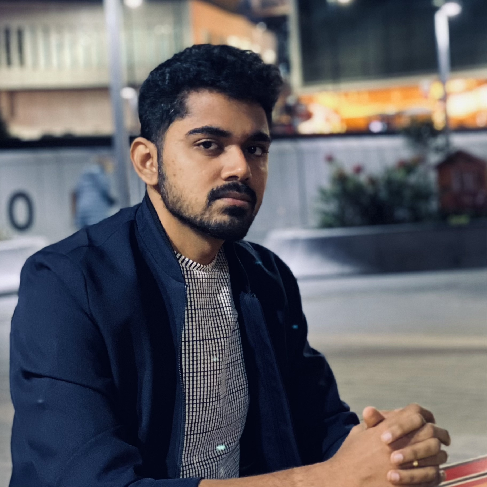

Hi, I am Rajesh!

I am ML scientist working on the frontier of research & business.
This website hosts my ML blog, portfolio and more of my work. All opinions are my own.
Check out my CV and other pages:
- 🗣 public talks from AI meetups and conferences
- 📚 scientific publications with abstracts and PDFs
- 📁 portfolio with my ML projects in different domains